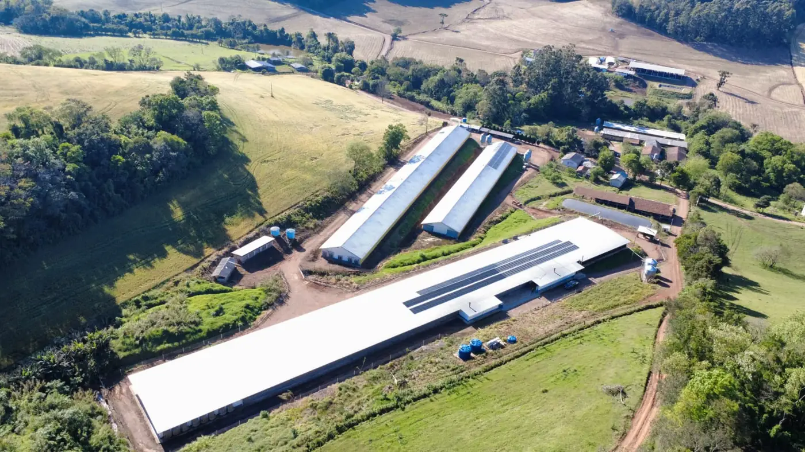
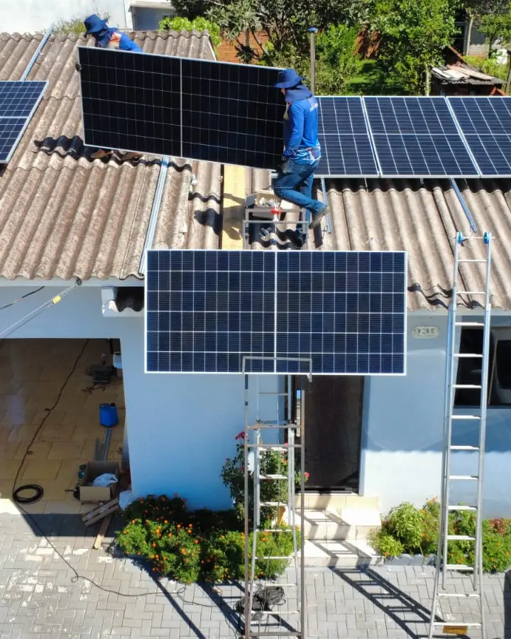
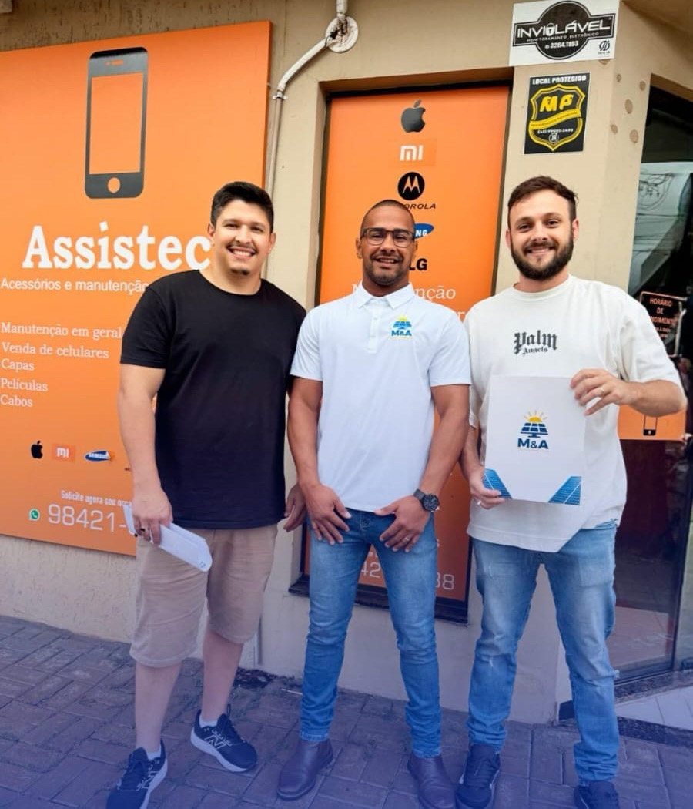
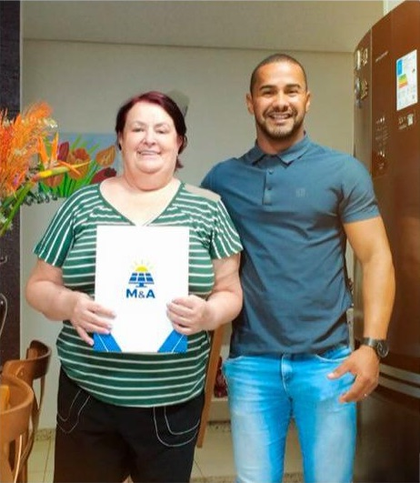
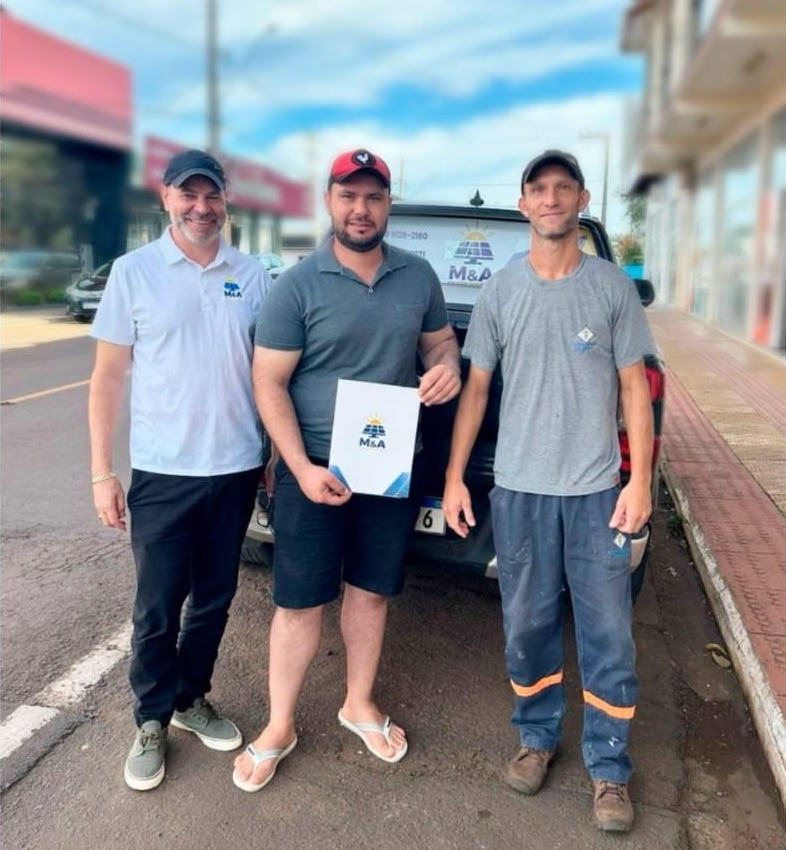
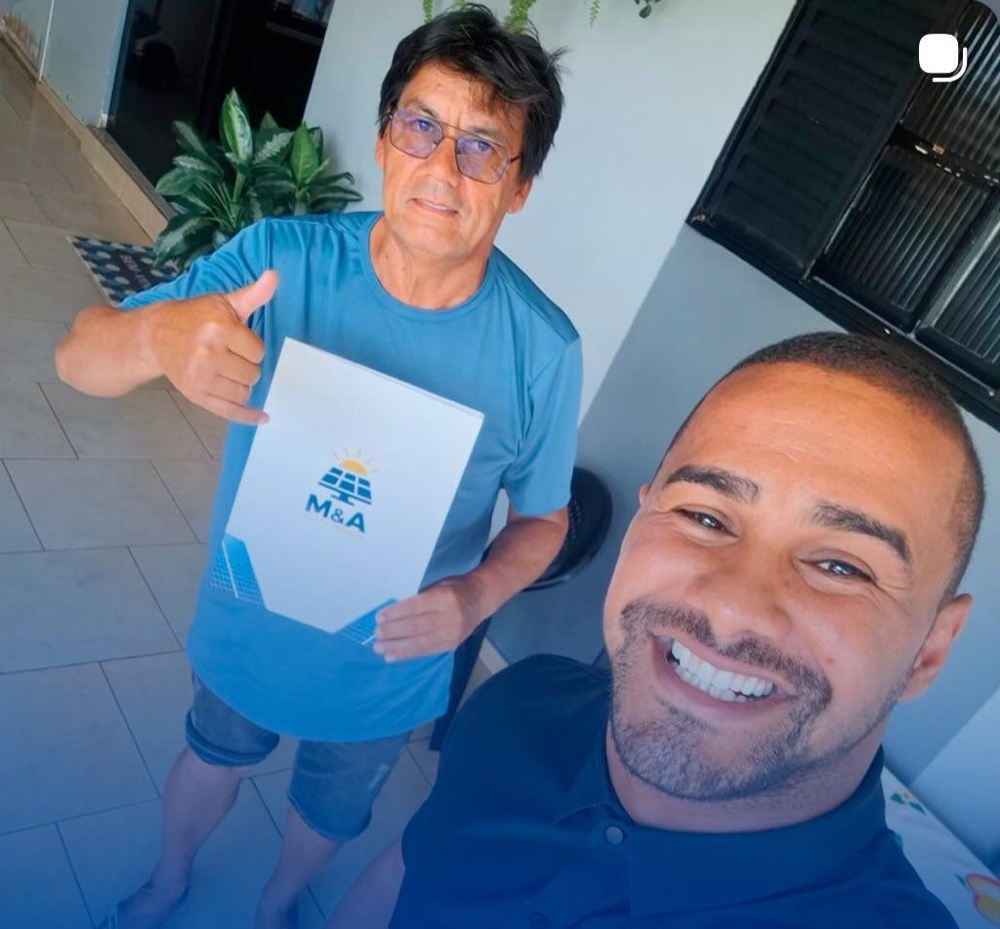
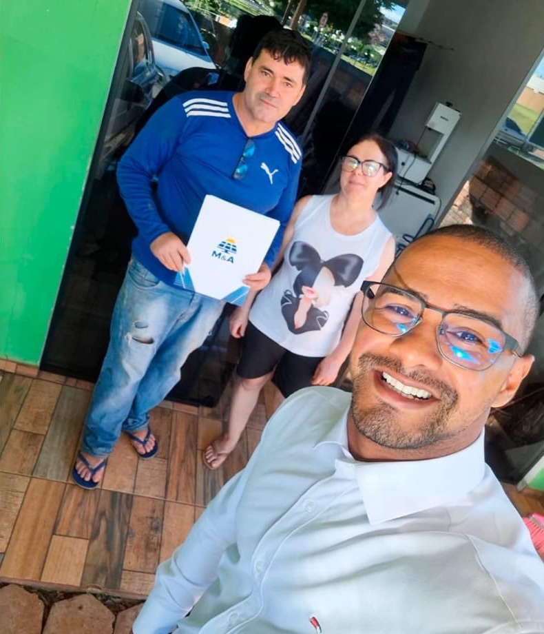
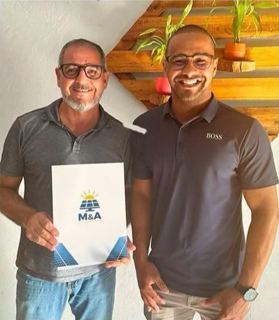
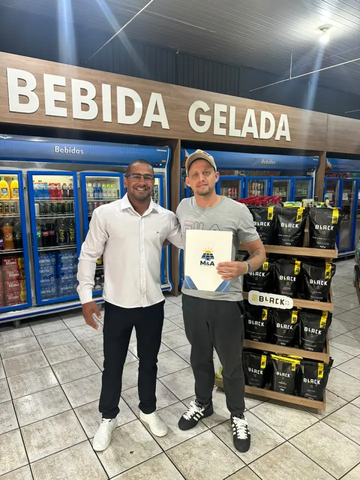

Energia solar para agronegócio em Palotina: projeto, instalação e homologação
Na conta de luz da propriedade, a economia chega até 90%
Atendemos Palotina com equipe própria, a partir da nossa sede em Medianeira. Projeto elétrico assinado, ART no CREA-PR e homologação completa junto à Copel - do protocolo inicial até a troca do medidor bidirecional. Orçamento calculado a partir da sua fatura real, sem estimativa de tabela.
Resposta em poucos minutos no horário comercialEnergia solar no campo em Palotina: aviário, suíno, leite e grão
Palotina tem 7,0 milhões de aves e 63.619 suínos, produz 14,5 milhões de litros de leite por ano e colheu 309.810 toneladas de milho e 164.376 de soja em 2025 (IBGE). Cada uma dessas atividades gasta energia num horário diferente.
O agronegócio de Palotina junta aviário, granja de suínos, leite e grãos, quase sempre com barracão de chapa metálica, ligação trifásica e unidade cadastrada como rural na Copel. Na chapa, o módulo vai preso com grampo autobrocante e fita butílica, e a propriedade com mais de uma conta de luz precisa de projeto que distribua os créditos entre elas.
Por isso o projeto parte da atividade e da conta do último ano. Ventilação de aviário e resfriamento de leite aproveitam a geração o dia todo, e a secagem depende do crédito acumulado fora da colheita.
Sobra telhado de barracão na maioria das propriedades, e há espaço para montar no chão quando ele não basta.
Quer saber quanto sobraria da sua conta em Palotina?
Envie uma foto da sua fatura de energia. Devolvemos o cálculo de economia, o investimento estimado e o tempo de retorno para Palotina e região.
Enviar minha conta de luz
Retorno do investimento solar no campo de Palotina
A unidade rural pode ter tarifa menor que a residencial, e cada kWh economizado vale um pouco menos. O cálculo usa a tarifa da sua própria unidade.
O produtor pode financiar pelo crédito rural do Plano Safra, com prazo ligado ao ciclo da produção. Palotina tem 523 sistemas solares em unidades rurais, com mediana de 35 kW (ANEEL), bem acima da casa da cidade.
A rede também pesa. No interior, a ligação pode ser monofásica e o transformador pequeno, e isso limita a potência aceita pela Copel. Vemos na visita, antes do projeto.
O crédito rural do Plano Safra tem juros e limites definidos a cada ano, e o Pronaf, para a agricultura familiar, pede o CAF. Com a condição do ano, comparamos a parcela com a economia da conta. A M&A prepara o projeto, o memorial descritivo e o laudo técnico que o banco ou a cooperativa de crédito pedir.
O sistema certo para cada atividade do campo
Cada atividade tem um horário de consumo, e o sistema segue esse horário.
Aviários
Aviário: ventilação, exaustão e luz ligadas direto, com pico nos dias quentes.
Suinocultura
Suínos: climatização, bombas e tratamento de dejetos com carga firme durante o dia.
Leite
Leite: ordenha e resfriador em horário certo, pagos em parte pela geração e em parte pelo crédito.
Irrigação e bombeamento
Irrigação: as bombas grandes podem trabalhar nas horas de mais sol.
Secagem e armazenagem
Grãos: secagem pesada na safra, coberta em parte pelo crédito da entressafra.
Sede e moradias
Casas da propriedade: no mesmo sistema ou com os créditos, se a conta for do mesmo titular.
Exemplos ilustrativos de dimensionamento em Palotina
Três perfis de consumo comuns na região, com potência, economia mensal projetada e prazo de retorno estimados para dar ordem de grandeza; o seu projeto é calculado com a sua fatura.
Sítio / propriedade com grãos e bombeamento
Uma propriedade com 2.500 kWh por mês, somando casa, poço, resfriador de leite e um beneficiamento pequeno, fica perto de 25 kWp no telhado metálico do barracão. A economia projetada é de uns R$ 2.125 por mês depois da ligação na Copel, e o retorno, perto de três anos e meio. O cálculo usa a tarifa rural da própria unidade.
Granja suinícola de médio porte
Com 3.200 kWh por mês de ventilação, controle de temperatura e motores ligados direto, o sistema fica perto de 32 kWp em telhado metálico. Como o consumo é de dia, boa parte da geração é usada na hora. A economia projetada fica em torno de R$ 2.720 por mês, e o retorno, perto de três anos e meio. Pode ser financiado pelo crédito rural.
Armazém de grãos em Palotina
Consumo médio de 12.000 kWh/mês com pico na safra de soja e milho. Sistema de 120 kWp sobre telhado metálico de grande vão. Alta coincidência entre geração diurna e operação do armazém. Economia projetada de R$ 10.200 por mês. Payback em 3,5 anos. Equipe própria, sem sobretaxa para projetos desse porte.
Sua conta em Palotina passou de R$ 400?
Nesse patamar, o sistema costuma se pagar em menos de cinco anos. Vale calcular antes do próximo reajuste da Copel.
O campo de Palotina em números
Em outubro de 2026, a ANEEL registrava 523 sistemas de energia solar em unidades rurais de Palotina, 14% do total do município. A potência típica é de 35,0 kW por sistema (mediana).
O município tem 7,0 milhões de aves, 63.619 suínos e 14,5 milhões de litros de leite por ano, segundo a Pesquisa da Pecuária Municipal de 2025.
Na lavoura, Palotina colheu 309.810 toneladas de milho e 164.376 toneladas de soja em 2025.
Com um plantel de aves desse tamanho, os aviários estão entre as principais cargas elétricas do campo: ventilação, exaustão e iluminação funcionam de forma contínua.
O volume de grãos indica uso intenso de secadores e aeradores na safra, quando o consumo sobe muito em poucas semanas.
Fontes: ANEEL, Relação de Empreendimentos de Geração Distribuída (dados de outubro de 2026); IBGE, Pesquisa da Pecuária Municipal 2025; IBGE, Produção Agrícola Municipal 2025.
Marcas com representação e assistência no Brasil
Garantia de 30 anos só tem valor se existir estrutura para acionar. Trabalhamos com fabricantes que mantêm suporte em território nacional.
Módulos fotovoltaicos
Os módulos de 620 W são bifaciais, tipo N. Montados no chão, o lado de trás também gera, e o ganho depende da altura da estrutura e do piso embaixo. A ficha da Gokin informa teste de granizo com pedra de 25 mm a 23 m/s, e a garantia de desempenho é de 30 anos.
Inversores
Em ligação trifásica, o Sofar 30KTLX-G3-LV, de 30 kW, aceita até 51 kWp em quatro entradas. Em monofásica, usamos Sofar de 5 kW ou 10,5 kW e Auxsol de 7,5 kW. Todos são IP65 ou IP66 contra poeira e água.
Estruturas de fixação
Alumínio anodizado e parafusos em inox 304, dimensionados para a carga de vento da região conforme NBR 6123. Fixação sem furo desnecessário.
Proteções elétricas
String box com DPS, fusíveis e disjuntores conforme NBR 16690 e exigências da Copel. É o item que a concorrência mais corta para baixar preço.
Monitoramento
Aplicativo com geração em tempo real, histórico por período e alerta automático em caso de falha. Você acompanha do celular e nossa equipe recebe o mesmo alerta.
Cabeamento solar
Cabos com dupla isolação e proteção UV, conectores MC4 originais e crimpagem com ferramenta específica. Sem emenda improvisada exposta ao sol.
Veja as marcas e os modelos de módulos e inversores que instalamos hoje
Da conta rural ao sistema ligado
O cronograma respeita o calendário da produção.
Fatura e enquadramento
Lemos um ano de conta e conferimos se a unidade está como rural.
Visita à propriedade
Vemos barracões, estrutura, área para o solo, entrada de energia e distâncias.
Projeto e crédito
Entregamos projeto, ART e orçamento por item, que servem também para o crédito rural.
Instalação
A obra fica fora do alojamento de lote, da colheita e de outros períodos críticos.
Homologação na Copel
Cuidamos da Copel até o medidor novo.
Clientes atendidos pela M&A
Registros de entrega feitos pela nossa equipe.







Perguntas de produtores de Palotina
Energia solar para agronegócio em Palotina
A M&A Soluções Energéticas atende Palotina com equipe própria, a partir da nossa sede em Medianeira. O deslocamento não gera sobretaxa: a visita técnica, a instalação e o comissionamento são realizados em dias consecutivos sem custo adicional para o cliente. A mão de obra da instalação tem garantia de 5 anos. O prazo final depende da Copel. A finalização do nosso serviço leva em torno de 45 a 60 dias.
O Oeste do Paraná tem condição de irradiação solar bastante favorável - média de 4,7 a 5,1 kWh/m²/dia ao longo do ano, superior à maioria dos países europeus onde a tecnologia já é amplamente consolidada. Em Palotina, com perfil de grãos, essa irradiação é suficiente para compensar com folga o consumo anual da maioria dos perfis de instalação.
Além de Palotina, atendemos com a mesma equipe as seguintes localidades:
- Nova Santa Rosa
- Assis Chateaubriand
- Toledo
Não encontrou sua localidade? Entre em contato mesmo assim - atendemos com frequência municípios vizinhos e, dependendo do porte do projeto, o deslocamento não altera o investimento final.
No telhado do galpão ou em solo
No telhado
No telhado do barracão: área já coberta, perto do consumo, sem ocupar terra de lavoura. Depende da estrutura e da direção do telhado.
Em solo
No chão: direção e inclinação livres e limpeza fácil, mas ocupa área e pede base, cerca e mais cabo.
Documentos para o crédito rural
- Projeto elétrico e ART, fornecidos pela M&A.
- Orçamento detalhado por equipamento, fornecido pela M&A.
- Faturas de energia da propriedade.
- Matrícula do imóvel ou contrato de arrendamento.
- CAF, se a linha de crédito pedir.
- Documentos pessoais e cadastro em dia no banco ou na cooperativa.
Quem define a lista final é o banco.
Sua próxima conta de luz em Palotina pode ser a última alta
Envie sua fatura pelo WhatsApp. Você recebe o estudo de viabilidade completo - sem custo e sem compromisso - com a economia projetada e o tempo de retorno do investimento.
Solicitar orçamento gratuito Atendimento humano · Seg a Sex · 8h às 18h · Sáb 8h às 12h